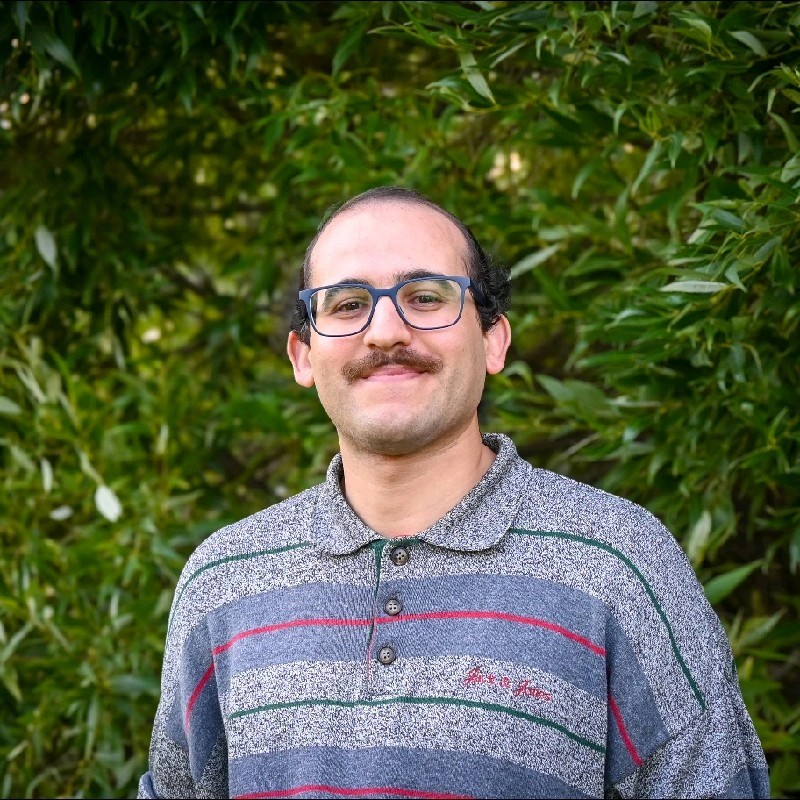

Ouail Zakary
Ph.D. · Postdoctoral Researcher · NMR Research Unit, University of Oulu, Finland
My research focuses on developing machine learning-driven approaches for the atomistic modeling of molecular and solid-state systems under real physicochemical conditions. By integrating quantum mechanics at the relativistic level with classical and path integral molecular dynamics, I aim to deliver highly predictive models for structural, dynamic, and spectroscopic observables.
A significant part of my work involves training equivariant graph neural networks and kernel regression models to develop MLIPs and NMR-ML models that enable realistic simulations of complex materials.
Equivariant GNNs
MLIPs
NMR-ML
Material NMR
Material Chemistry
DFT
Ab Initio Methods
Classical/Path Integral MD
HPC
Python
0
Publications
peer-reviewed
0
Conferences
talks & posters
0
Years of research
PhD + postdoc
0
Students supervised
PhD, MSc & BSc
0
Countries
collaborations & conferences
Authorship breakdown
By type
0
Oral communications
0
Contributed talks
0
Poster presentations
0
Workshops
Career timeline
~38 months
PhD
Le Mans Université, France
~28 months
Postdoctoral researcher
University of Oulu, Finland
By level
1
PhD student
5
MSc students
1
BSc student
Countries
Finland
France
Norway
Germany
Spain
USA
Latest news
Preprint
March 2026
RuP preprint published on ChemRxiv
A preprint of our latest research, "Local Symmetry Breaking and Two-Stage Phase Transition in RuP Uncovered by a Fine-Tuned Atomistic Foundation Model", is available on ChemRxiv.
Read more
Publication
March 2026
New paper in J. Phys. Chem. A
Our collaborative paper, "Machine Learning-Accelerated Path Integral Molecular Dynamics and 13C NMR Simulations Unlock New Insights into Quantum Effects in C60 Fullerene" has been published in J. Phys. Chem. A.
Read more
Conference
December 2025
Attended the 39th Winter School in Theoretical Chemistry
I recently attended the Helsinki Winter School in Theoretical Chemistry, which focused on "Electronic Structure Theory".
Read more
Award
November 2025
J. Phys. Chem. Lett. paper selected as Supplementary Journal Cover
Our paper on equivariant neural networks for 129Xe NMR in porous liquids featured as a Supplementary Cover of J. Phys. Chem. Lett.
Read more
Publication
November 2025
New paper in J. Phys. Chem. Lett.
Our research article, "Equivariant Neural Networks Reveal How Host–Guest Interactions Shape 129Xe NMR in Porous Liquids" has been published in J. Phys. Chem. Lett..
Read more
Preprint
November 2025
C60 preprint published on ChemRxiv
A preprint of our latest research, "Machine Learning-Accelerated Path Integral Molecular Dynamics and 13C NMR Simulations Unlock New Insights Into Quantum Effects in C60 Fullerene", is available on ChemRxiv.
Read more